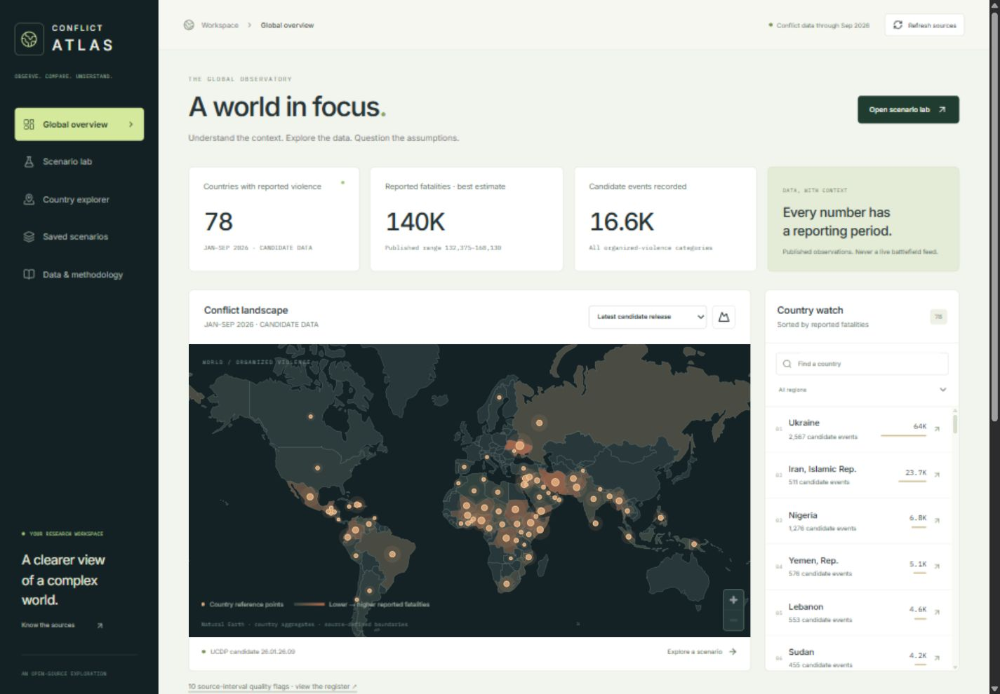

CONFLICT ATLAS / MAP & SCENARIOS01
JAVA / DATA VISUALIZATION
Making a complex
Making a complex
world readable.
Conflict Atlas brings published conflict data and country resources into one map, with an educational Java scenario engine.
The live site shows dated snapshots. Simulations and saved runs use the full Java application.